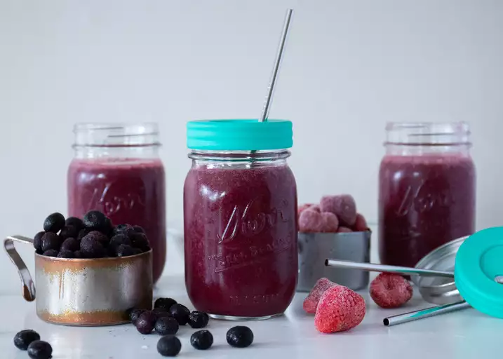

Blueberry Cream Slushy

Description
My husband and I went crazy over a blueberry smoothie at a local cafe.
This was our attempt to recreate it...but we actually like it better than
the original!
Ingridents
- 1 cup frozen blueberries
- 1 cup frozen strawberries
- 1 cup pineapple and orange juice blend
- 1 cup vanilla yogurt
- 2 teaspoons sugar
- 6 ice cubes
Steps
-
Place the blueberries, strawberries, juice, yogurt and sugar into the
container of a blender.
-
Add the ice cubes, and process until small enough to fit through a
straw, but large enough to crunch on.
- Pour into glasses, and drink through straws.
Home
Next recipe